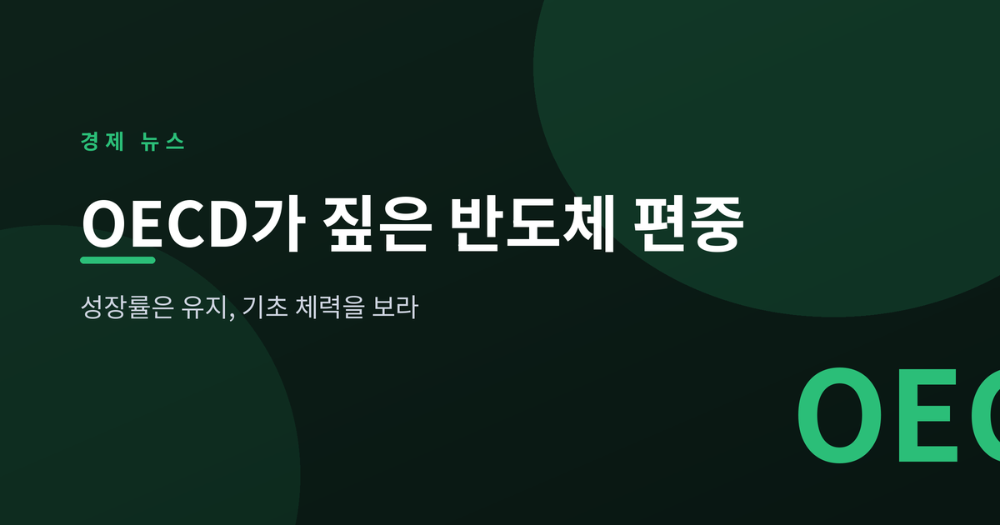
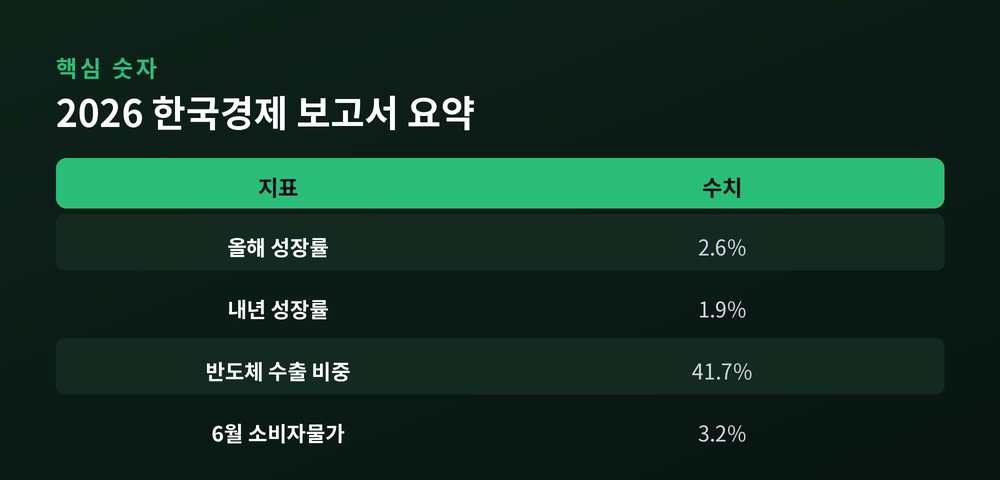
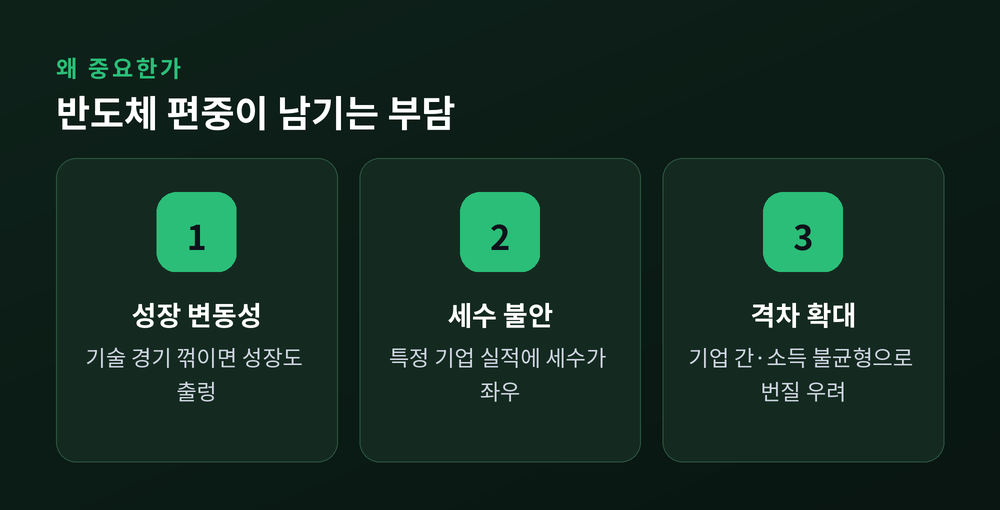
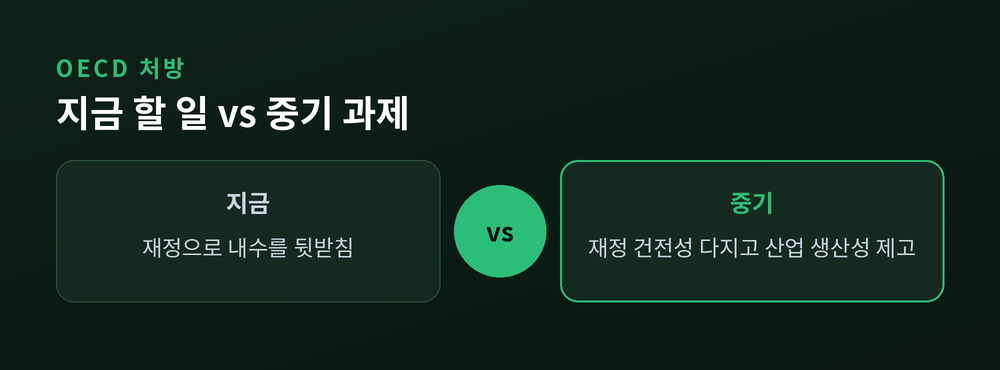

성장률은 유지, 그러나 기초 체력을 보라

7월 2일 OECD가 '2026 한국경제 보고서'를 내놓았습니다. 올해 성장률 전망은 2.6%로 유지됐습니다. 다만 그 안에 담긴 경고가 더 눈에 띕니다. 오늘은 이 보고서가 무엇을 말했고 왜 중요한지 정리해 보겠습니다.
이 글은 정보 제공을 위한 해설이며 투자 권유가 아닙니다.
OECD는 한국의 2026년 성장률을 2.6%로 제시했습니다. 내년은 1.9%로 봤습니다. 지난해 계엄과 중동 정세 불안이라는 악재에도 회복세를 이어간다는 평가입니다.
성장의 원동력은 반도체입니다. OECD는 "반도체 호황이 끝났다는 전망은 시기상조"라고 못박았습니다. AI 투자가 이어지며 칩 수출이 성장을 떠받치고 있다는 것입니다.
숫자가 이를 뒷받침합니다. 올해 상반기 수출에서 반도체가 차지하는 비중은 41.7%까지 올랐습니다. 1년 전보다 약 19%포인트 높아진 수치입니다. 수출품 다섯 개 중 두 개가 반도체인 셈입니다.

밝은 숫자 뒤에 그늘이 있습니다. OECD는 반도체 편중이 한국 경제의 위험을 키운다고 지적했습니다. 한 산업에 의존이 쏠릴수록, 그 산업이 흔들릴 때 충격도 커집니다.
편중은 세 갈래로 부담을 남깁니다. 기술 경기가 꺾이면 성장이 함께 출렁입니다. 세수도 특정 기업 실적에 따라 크게 움직입니다. 반도체 중심의 생산성 향상은 기업 간 격차와 소득 불균형으로 번질 수 있습니다.
주목할 대목은 잠재성장률입니다. OECD는 올해 성장 전망은 유지하면서도 잠재성장률 전망치는 낮췄습니다. 눈앞의 호황과 별개로, 경제의 기초 체력이 약해지고 있다는 신호로 읽힙니다.

OECD의 처방은 균형입니다. 반도체의 성장세가 다른 산업으로 퍼져야 한다고 강조했습니다. 산업 전반의 생산성을 함께 끌어올려야 한다는 주문입니다.
재정에 대해서도 방향을 제시했습니다. 지금은 내수를 뒷받침하되, 중기적으로는 재정 건전성을 다져야 한다는 것입니다. 고령화로 늘어날 지출 압력을 염두에 둔 조언입니다.
한편 물가는 별도의 부담입니다. 6월 소비자물가 상승률은 3.2%였습니다. 국제유가 오름세가 이어진 영향입니다. 성장은 반도체가 끌고, 물가는 유가가 밀어 올리는 구도입니다.

정리하면 이렇습니다. 반도체는 지금 한국 경제를 떠받치는 기둥입니다. 그러나 기둥 하나에 지붕 전체를 얹으면, 그 기둥이 흔들릴 때 집도 흔들립니다.
— 좋은 숫자일수록, 그 뒤에 가려진 것을 함께 봐야 합니다.
호황은 반가운 일입니다. 다만 호황이 가린 곳을 들여다볼 때, 다음을 준비할 수 있습니다.